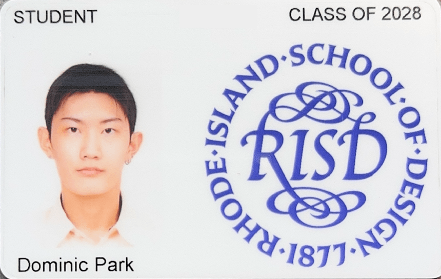
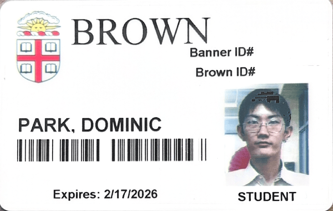
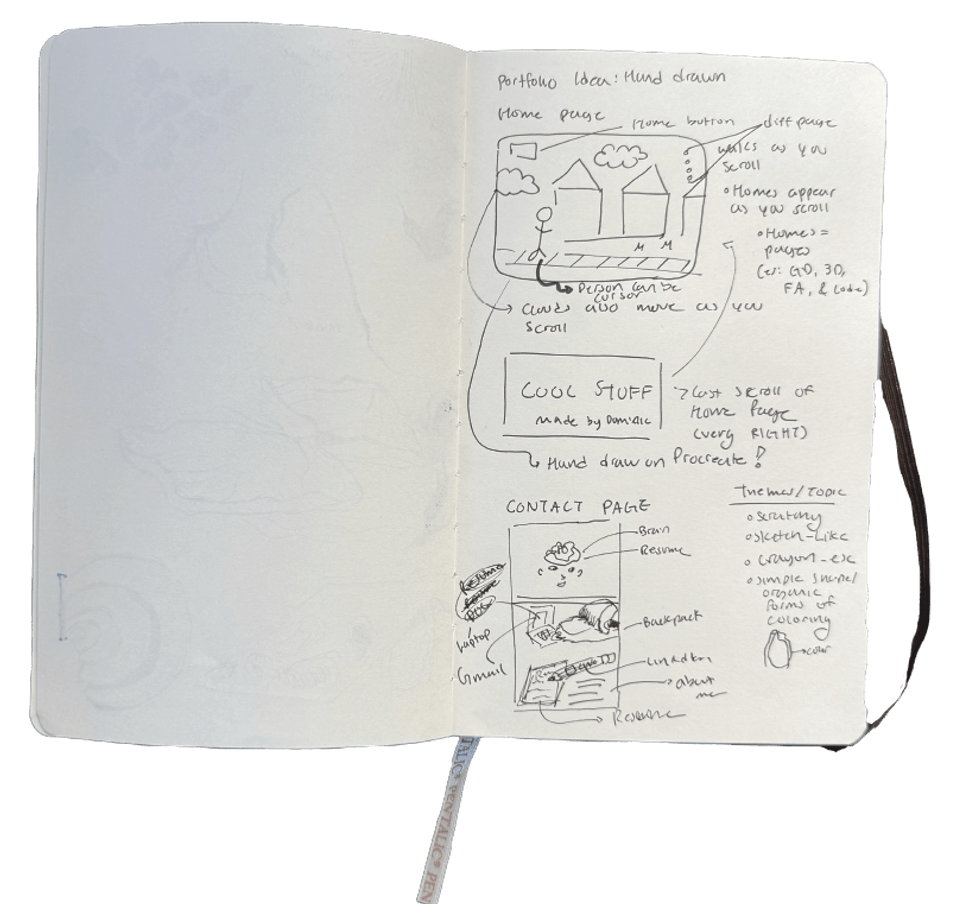
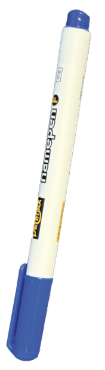
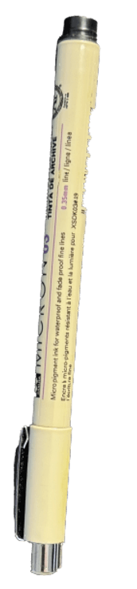

Hi, I’m Dominic.
I’m a junior at the Rhode Island School of Design studying Graphic Design, with a minor in Computation and Psychology. That combination is how I approach UX: graphic design gives me form, computation gives me systems, and psychology gives me the reason behind both.
I’m most interested in how design communicates an idea and turns it into an interaction someone actually wants to have. My work moves between interface design, brand systems, and campaigns, and it usually starts in the same place; talking to the people it’s for, then designing the thing that removes what’s in their way.
Most recently I was a Design Intern at Cheil USA working on Samsung, and I volunteer as a UX designer for Providence Promise and Living Outside. Outside of screens, I draw characters and build them in 3D.
dominic.park.j@gmail.com · Providence, RI and Jersey City, NJ





Focus
- UX researchInterviews, affinity mapping, personas, usability testing
- Interface and interaction designMobile apps, websites, information architecture
- Brand and campaign systemsIdentity, art direction, packaging
- ToolsFigma, Adobe Creative Cloud, Cinema 4D, Blender, Spline, Claude Code
Experience
- Cheil USA (Samsung), Design InternJun – Aug 2026 · Dallas, TX
- Living Outside, UX Design VolunteerJul 2026 – present · Remote
- Design for America, Product DesignSept 2025 – present · Brown & RISD
- Providence Promise, UX Design VolunteerOct 2025 – Apr 2026 · Providence, RI
- The College Hill Independent, Web DesignSept 2025 – May 2026
- Girl Scouts, Marketing & Communications InternJun – Aug 2023 · Dallas, TX
Education & recognition
- Rhode Island School of DesignBFA Graphic Design, minor in Computation and Psychology · 2028
- Brown University, cross-registeredSocial Context of Learning and Development; Contemporary Architecture
- Honors Designation, RISDFall 2024 – present
- Baseline Type ExhibitRISD Graphic Design · Nov 2025
- Exhibition Designer“The Things We Have In (the) Common(S)” · May 2026